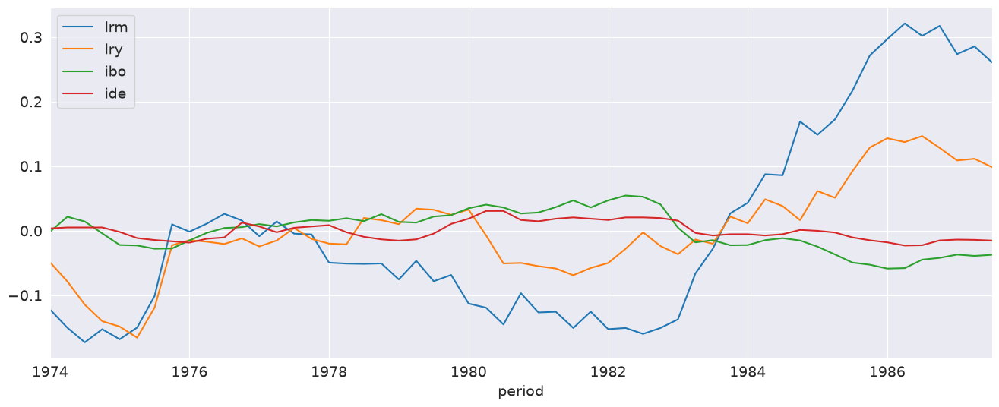
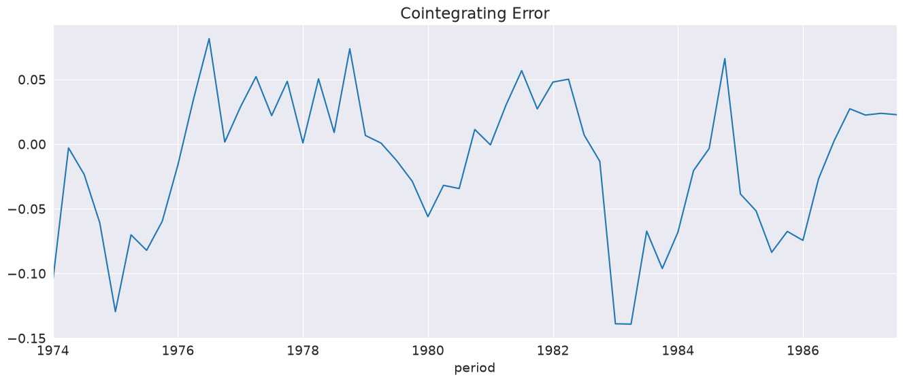
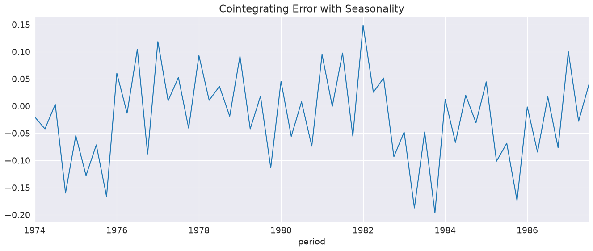
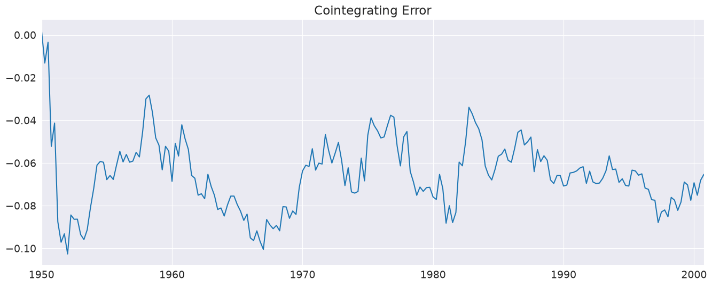

Autoregressive Distributed Lag (ARDL) models#
ARDL Models#
Autoregressive Distributed Lag (ARDL) models extend Autoregressive models with lags of explanatory variables. While ARDL models are technically AR-X models, the key difference is that ARDL models focus on the exogenous variables and selecting the correct lag structure from both the endogenous variable and the exogenous variables. ARDL models are also closely related to Vector Autoregressions, and a single ARDL is effectively one row of a VAR. The key distinction is that an ARDL assumes that the exogenous variables are exogenous in the sense that it is not necessary to include the endogenous variable as a predictor of the exogenous variables.
The full specification of ARDL models is
The terms in the model are:
\(\delta_i\): constant and deterministic time regressors. Set using
trend.\(S_i\) are seasonal dummies which are included if
seasonal=True.\(X_{k,t-j}\) are the exogenous regressors. There are a number of formats that can be used to specify which lags are included. Note that the included lag lengths do no need to be the same. If
causal=True, then the lags start with lag 1. Otherwise lags begin with 0 so that the model included the contemporaneous relationship between \(Y_t\) and \(X_t\).\(Z_t\) are any other fixed regressors that are not part of the distributed lag specification. In practice these regressors may be included when they do no contribute to the long run-relationship between \(Y_t\) and the vector of exogenous variables \(X_t\).
\(\{\epsilon_t\}\) is assumed to be a White Noise process
[1]:
import numpy as np
import pandas as pd
import seaborn as sns
sns.set_style("darkgrid")
sns.mpl.rc("figure", figsize=(16, 6))
sns.mpl.rc("font", size=14)
Data#
This notebook makes use of money demand data from Denmark, as first used in S. Johansen and K. Juselius (1990). The key variables are:
lrm: Log of real money measured using M2lry: Log of real incomeibo: Interest rate on bondside: Interest rate of bank deposits
The standard model uses lrm as the dependent variable and the other three as exogenous drivers.
Johansen, S. and Juselius, K. (1990), Maximum Likelihood Estimation and Inference on Cointegration – with Applications to the Demand for Money, Oxford Bulletin of Economics and Statistics, 52, 2, 169–210.
We start by loading the data and examining it.
[2]:
from statsmodels.datasets.danish_data import load
from statsmodels.tsa.api import ARDL
from statsmodels.tsa.ardl import ardl_select_order
data = load().data
data = data[["lrm", "lry", "ibo", "ide"]]
data.tail()
[2]:
| lrm | lry | ibo | ide | |
|---|---|---|---|---|
| period | ||||
| 1986-07-01 | 12.056189 | 6.098992 | 0.111500 | 0.067941 |
| 1986-10-01 | 12.071628 | 6.080706 | 0.114267 | 0.075396 |
| 1987-01-01 | 12.027952 | 6.061175 | 0.119333 | 0.076653 |
| 1987-04-01 | 12.039788 | 6.063730 | 0.117333 | 0.076259 |
| 1987-07-01 | 12.015294 | 6.050830 | 0.118967 | 0.075163 |
We plot the demeaned data so that all series appear on the same scale. The lrm series appears to be non-stationary, as does lry. The stationarity of the other two is less obvious.
[3]:
_ = (data - data.mean()).plot()

Model Selection#
ardl_select_order can be used to automatically select the order. Here we use min the minimum AIC among all modes that consider up to 3 lags of the endogenous variable and 3 lags of each exogenous variable. trend="c" indicates that a constant should be included in the model.
[4]:
sel_res = ardl_select_order(
data.lrm, 3, data[["lry", "ibo", "ide"]], 3, ic="aic", trend="c"
)
print(f"The optimal order is: {sel_res.model.ardl_order}")
The optimal order is: (3, 1, 3, 2)
The optimal order is returned as the number of lags of the endogenous variable followed by each of the exogenous regressors. The attribute model on sel_res contains the model ARDL specification which can be used to call fit. Here we look at the summary where the L# indicates that lag length (e.g., L0 is no lag, i.e., \(X_{k,t}\), L2 is 2 lags, i.e., \(X_{k,t-2}\)).
[5]:
res = sel_res.model.fit()
res.summary()
[5]:
| Dep. Variable: | lrm | No. Observations: | 55 |
|---|---|---|---|
| Model: | ARDL(3, 1, 3, 2) | Log Likelihood | 139.513 |
| Method: | Conditional MLE | S.D. of innovations | 0.017 |
| Date: | Sat, 27 Jun 2026 | AIC | -251.026 |
| Time: | 20:37:49 | BIC | -223.708 |
| Sample: | 10-01-1974 | HQIC | -240.553 |
| - 07-01-1987 |
| coef | std err | z | P>|z| | [0.025 | 0.975] | |
|---|---|---|---|---|---|---|
| const | 2.6202 | 0.568 | 4.615 | 0.000 | 1.472 | 3.769 |
| lrm.L1 | 0.3192 | 0.137 | 2.336 | 0.025 | 0.043 | 0.596 |
| lrm.L2 | 0.5326 | 0.132 | 4.024 | 0.000 | 0.265 | 0.800 |
| lrm.L3 | -0.2687 | 0.102 | -2.631 | 0.012 | -0.475 | -0.062 |
| lry.L0 | 0.6728 | 0.131 | 5.129 | 0.000 | 0.407 | 0.938 |
| lry.L1 | -0.2574 | 0.147 | -1.749 | 0.088 | -0.555 | 0.040 |
| ibo.L0 | -1.0785 | 0.322 | -3.353 | 0.002 | -1.729 | -0.428 |
| ibo.L1 | -0.1062 | 0.586 | -0.181 | 0.857 | -1.291 | 1.079 |
| ibo.L2 | 0.2877 | 0.569 | 0.505 | 0.616 | -0.863 | 1.439 |
| ibo.L3 | -0.9947 | 0.393 | -2.534 | 0.015 | -1.789 | -0.201 |
| ide.L0 | 0.1255 | 0.554 | 0.226 | 0.822 | -0.996 | 1.247 |
| ide.L1 | -0.3280 | 0.721 | -0.455 | 0.652 | -1.787 | 1.131 |
| ide.L2 | 1.4079 | 0.552 | 2.550 | 0.015 | 0.291 | 2.524 |
Global searches#
The selection criteria can be switched the BIC which chooses a smaller model. Here we also use the glob=True option to perform a global search which considers models with any subset of lags up to the maximum lag allowed (3 here). This option lets the model selection choose non-contiguous lag specifications.
[6]:
sel_res = ardl_select_order(
data.lrm, 3, data[["lry", "ibo", "ide"]], 3, ic="bic", trend="c", glob=True
)
sel_res.model.ardl_order
[6]:
(3, 0, 3, 2)
While the ardl_order shows the largest included lag of each variable, ar_lags and dl_lags show the specific lags included. The AR component is regular in the sense that all 3 lags are included. The DL component is not since ibo selects only lags 0 and 3 and ide selects only lags 2.
[7]:
sel_res.model.ar_lags
[7]:
[1, 2, 3]
[8]:
sel_res.model.dl_lags
[8]:
{'lry': [0], 'ibo': [0, 3], 'ide': [2]}
We can take a look at the best performing models according to the BIC which are stored in the bic property. ibo at lags 0 and 3 is consistently selected, as is ide at either lag 2 or 3, and lry at lag 0. The selected AR lags vary more, although all of the best specifications select some.
[9]:
for i, val in enumerate(sel_res.bic.head(10)):
print(f"{i+1}: {val}")
1: ((1, 2, 3), {'lry': (0,), 'ibo': (0, 3), 'ide': (2,)})
2: ((1, 2, 3), {'lry': (0, 1), 'ibo': (0, 3), 'ide': (2,)})
3: ((2,), {'lry': (0,), 'ibo': (0, 3), 'ide': (3,)})
4: ((1, 2, 3), {'lry': (0, 2), 'ibo': (0, 3), 'ide': (2,)})
5: ((2,), {'lry': (0, 2), 'ibo': (0, 3), 'ide': (2,)})
6: ((2,), {'lry': (0, 3), 'ibo': (0, 3), 'ide': (2,)})
7: ((2, 3), {'lry': (0,), 'ibo': (0, 3), 'ide': (2,)})
8: ((1, 2, 3), {'lry': (0,), 'ibo': (0, 3), 'ide': (2, 3)})
9: ((2,), {'lry': (0,), 'ibo': (0, 3), 'ide': (2, 3)})
10: ((1, 2), {'lry': (0,), 'ibo': (0, 3), 'ide': (3,)})
Direct Parameterization#
ARDL models can be directly specified using the ARDL class. The first argument is the endogenous variable (\(Y_t\)). The second is the AR lags. It can be a constant, in which case lags 1, 2, …, \(P\) are included, or a list of specific lags indices to include (e.g., [1, 4]). The third are the exogenous variables, and the fourth is the list of lags to include. This can be one of
An
int: Include lags 0, 1, …, QA dict with column names when
exogis aDataFrameor numeric column locations whenexogis a NumPy array (e.g.,{0:1, 1: 2, 2:3}, would match the specification below if a NumPy array was used.A dict with column names (DataFrames) or integers (NumPy arrays) that contains a list of specific lags to include (e.g.,
{"lry":[0,2], "ibo":[1,2]}).
The specification below matches that model selected by ardl_select_order.
[10]:
res = ARDL(
data.lrm, 2, data[["lry", "ibo", "ide"]], {"lry": 1, "ibo": 2, "ide": 3}, trend="c"
).fit()
res.summary()
[10]:
| Dep. Variable: | lrm | No. Observations: | 55 |
|---|---|---|---|
| Model: | ARDL(2, 1, 2, 3) | Log Likelihood | 136.252 |
| Method: | Conditional MLE | S.D. of innovations | 0.019 |
| Date: | Sat, 27 Jun 2026 | AIC | -246.504 |
| Time: | 20:37:57 | BIC | -220.890 |
| Sample: | 10-01-1974 | HQIC | -236.654 |
| - 07-01-1987 |
| coef | std err | z | P>|z| | [0.025 | 0.975] | |
|---|---|---|---|---|---|---|
| const | 2.4440 | 0.546 | 4.479 | 0.000 | 1.342 | 3.546 |
| lrm.L1 | 0.2695 | 0.139 | 1.944 | 0.059 | -0.011 | 0.550 |
| lrm.L2 | 0.3409 | 0.114 | 2.993 | 0.005 | 0.111 | 0.571 |
| lry.L0 | 0.6344 | 0.145 | 4.368 | 0.000 | 0.341 | 0.928 |
| lry.L1 | -0.2426 | 0.159 | -1.527 | 0.134 | -0.563 | 0.078 |
| ibo.L0 | -1.1316 | 0.359 | -3.157 | 0.003 | -1.856 | -0.408 |
| ibo.L1 | 0.1056 | 0.640 | 0.165 | 0.870 | -1.186 | 1.397 |
| ibo.L2 | -0.8347 | 0.497 | -1.679 | 0.101 | -1.839 | 0.170 |
| ide.L0 | 0.2849 | 0.614 | 0.464 | 0.645 | -0.954 | 1.524 |
| ide.L1 | 0.0433 | 0.805 | 0.054 | 0.957 | -1.582 | 1.669 |
| ide.L2 | 0.4429 | 0.770 | 0.575 | 0.568 | -1.112 | 1.998 |
| ide.L3 | 0.3671 | 0.515 | 0.713 | 0.480 | -0.673 | 1.408 |
NumPy Data#
Below we see how the specification of ARDL models differs when using NumPy arrays. The key difference is that the keys in the dictionary are now integers which indicate the column of x to use. This model is identical to the previously fit model and all key value match exactly (e.g., Log Likelihood).
[11]:
y = np.asarray(data.lrm)
x = np.asarray(data[["lry", "ibo", "ide"]])
res = ARDL(y, 2, x, {0: 1, 1: 2, 2: 3}, trend="c").fit()
res.summary()
[11]:
| Dep. Variable: | y | No. Observations: | 55 |
|---|---|---|---|
| Model: | ARDL(2, 1, 2, 3) | Log Likelihood | 136.252 |
| Method: | Conditional MLE | S.D. of innovations | 0.019 |
| Date: | Sat, 27 Jun 2026 | AIC | -246.504 |
| Time: | 20:37:57 | BIC | -220.890 |
| Sample: | 3 | HQIC | -236.654 |
| 55 |
| coef | std err | z | P>|z| | [0.025 | 0.975] | |
|---|---|---|---|---|---|---|
| const | 2.4440 | 0.546 | 4.479 | 0.000 | 1.342 | 3.546 |
| y.L1 | 0.2695 | 0.139 | 1.944 | 0.059 | -0.011 | 0.550 |
| y.L2 | 0.3409 | 0.114 | 2.993 | 0.005 | 0.111 | 0.571 |
| x0.L0 | 0.6344 | 0.145 | 4.368 | 0.000 | 0.341 | 0.928 |
| x0.L1 | -0.2426 | 0.159 | -1.527 | 0.134 | -0.563 | 0.078 |
| x1.L0 | -1.1316 | 0.359 | -3.157 | 0.003 | -1.856 | -0.408 |
| x1.L1 | 0.1056 | 0.640 | 0.165 | 0.870 | -1.186 | 1.397 |
| x1.L2 | -0.8347 | 0.497 | -1.679 | 0.101 | -1.839 | 0.170 |
| x2.L0 | 0.2849 | 0.614 | 0.464 | 0.645 | -0.954 | 1.524 |
| x2.L1 | 0.0433 | 0.805 | 0.054 | 0.957 | -1.582 | 1.669 |
| x2.L2 | 0.4429 | 0.770 | 0.575 | 0.568 | -1.112 | 1.998 |
| x2.L3 | 0.3671 | 0.515 | 0.713 | 0.480 | -0.673 | 1.408 |
Causal models#
Using the causal=True flag eliminates lag 0 from the DL components, so that all variables included in the model are known at time \(t-1\) when modeling \(Y_t\).
[12]:
res = ARDL(
data.lrm,
2,
data[["lry", "ibo", "ide"]],
{"lry": 1, "ibo": 2, "ide": 3},
trend="c",
causal=True,
).fit()
res.summary()
[12]:
| Dep. Variable: | lrm | No. Observations: | 55 |
|---|---|---|---|
| Model: | ARDL(2, 1, 2, 3) | Log Likelihood | 121.130 |
| Method: | Conditional MLE | S.D. of innovations | 0.025 |
| Date: | Sat, 27 Jun 2026 | AIC | -222.260 |
| Time: | 20:37:57 | BIC | -202.557 |
| Sample: | 10-01-1974 | HQIC | -214.683 |
| - 07-01-1987 |
| coef | std err | z | P>|z| | [0.025 | 0.975] | |
|---|---|---|---|---|---|---|
| const | 2.3885 | 0.696 | 3.434 | 0.001 | 0.987 | 3.790 |
| lrm.L1 | 0.4294 | 0.169 | 2.538 | 0.015 | 0.088 | 0.770 |
| lrm.L2 | 0.2777 | 0.139 | 2.003 | 0.051 | -0.002 | 0.557 |
| lry.L1 | 0.2064 | 0.139 | 1.481 | 0.146 | -0.074 | 0.487 |
| ibo.L1 | -1.2787 | 0.467 | -2.736 | 0.009 | -2.221 | -0.337 |
| ibo.L2 | -0.3403 | 0.568 | -0.600 | 0.552 | -1.484 | 0.804 |
| ide.L1 | -0.1234 | 0.746 | -0.165 | 0.869 | -1.627 | 1.380 |
| ide.L2 | 0.5001 | 0.978 | 0.511 | 0.612 | -1.471 | 2.472 |
| ide.L3 | 0.6106 | 0.656 | 0.931 | 0.357 | -0.711 | 1.933 |
Unconstrained Error Correction Models (UECM)#
Unconstrained Error Correction Models reparameterize ARDL model to focus on the long-run component of a time series. The reparameterized model is
Most of the components are the same. The key differences are:
The levels only enter at lag 1
All other lags of \(Y_t\) or \(X_{k,t}\) are differenced
Due to their structure, UECM models do not support irregular lag specifications, and so lags specifications must be integers. The AR lag length must be an integer or None, while the DL lag specification can be an integer or a dictionary of integers. Other options such as trend, seasonal, and causal are identical.
Below we select a model and then using the class method from_ardl to construct the UECM. The parameter estimates prefixed with D. are differences.
[13]:
from statsmodels.tsa.api import UECM
sel_res = ardl_select_order(
data.lrm, 3, data[["lry", "ibo", "ide"]], 3, ic="aic", trend="c"
)
ecm = UECM.from_ardl(sel_res.model)
ecm_res = ecm.fit()
ecm_res.summary()
[13]:
| Dep. Variable: | D.lrm | No. Observations: | 55 |
|---|---|---|---|
| Model: | UECM(3, 1, 3, 2) | Log Likelihood | 139.513 |
| Method: | Conditional MLE | S.D. of innovations | 0.017 |
| Date: | Sat, 27 Jun 2026 | AIC | -251.026 |
| Time: | 20:37:58 | BIC | -223.708 |
| Sample: | 10-01-1974 | HQIC | -240.553 |
| - 07-01-1987 |
| coef | std err | z | P>|z| | [0.025 | 0.975] | |
|---|---|---|---|---|---|---|
| const | 2.6202 | 0.568 | 4.615 | 0.000 | 1.472 | 3.769 |
| lrm.L1 | -0.4169 | 0.092 | -4.548 | 0.000 | -0.602 | -0.231 |
| lry.L1 | 0.4154 | 0.118 | 3.532 | 0.001 | 0.177 | 0.653 |
| ibo.L1 | -1.8917 | 0.391 | -4.837 | 0.000 | -2.683 | -1.101 |
| ide.L1 | 1.2053 | 0.447 | 2.697 | 0.010 | 0.301 | 2.109 |
| D.lrm.L1 | -0.2639 | 0.102 | -2.590 | 0.013 | -0.470 | -0.058 |
| D.lrm.L2 | 0.2687 | 0.102 | 2.631 | 0.012 | 0.062 | 0.475 |
| D.lry.L0 | 0.6728 | 0.131 | 5.129 | 0.000 | 0.407 | 0.938 |
| D.ibo.L0 | -1.0785 | 0.322 | -3.353 | 0.002 | -1.729 | -0.428 |
| D.ibo.L1 | 0.7070 | 0.469 | 1.508 | 0.140 | -0.241 | 1.655 |
| D.ibo.L2 | 0.9947 | 0.393 | 2.534 | 0.015 | 0.201 | 1.789 |
| D.ide.L0 | 0.1255 | 0.554 | 0.226 | 0.822 | -0.996 | 1.247 |
| D.ide.L1 | -1.4079 | 0.552 | -2.550 | 0.015 | -2.524 | -0.291 |
Cointegrating Relationships#
Because the focus is on the long-run relationship, the results of UECM model fits contains a number of properties that focus on the long-run relationship. These are all prefixed ci_, for cointegrating. ci_summary contains the normalized estimates of the cointegrating relationship and associated estimated values.
[14]:
ecm_res.ci_summary()
[14]:
| coef | std err | t | P>|t| | [0.025 | 0.975] | |
|---|---|---|---|---|---|---|
| const | -6.2857 | 0.772 | -8.143 | 0.000 | -7.847 | -4.724 |
| lrm.L1 | 1.0000 | 0 | nan | nan | 1.000 | 1.000 |
| lry.L1 | -0.9965 | 0.124 | -8.041 | 0.000 | -1.247 | -0.746 |
| ibo.L1 | 4.5381 | 0.520 | 8.722 | 0.000 | 3.486 | 5.591 |
| ide.L1 | -2.8915 | 0.995 | -2.906 | 0.004 | -4.904 | -0.879 |
ci_resids contains the long-run residual, which is the error the drives figure changes in \(\Delta Y_t\).
[15]:
_ = ecm_res.ci_resids.plot(title="Cointegrating Error")

Seasonal Dummies#
Here we add seasonal terms, which appear to be statistically significant.
[16]:
ecm = UECM(data.lrm, 2, data[["lry", "ibo", "ide"]], 2, seasonal=True)
seasonal_ecm_res = ecm.fit()
seasonal_ecm_res.summary()
[16]:
| Dep. Variable: | D.lrm | No. Observations: | 55 |
|---|---|---|---|
| Model: | Seas. UECM(2, 2, 2, 2) | Log Likelihood | 150.609 |
| Method: | Conditional MLE | S.D. of innovations | 0.014 |
| Date: | Sat, 27 Jun 2026 | AIC | -269.218 |
| Time: | 20:37:59 | BIC | -237.694 |
| Sample: | 07-01-1974 | HQIC | -257.096 |
| - 07-01-1987 |
| coef | std err | z | P>|z| | [0.025 | 0.975] | |
|---|---|---|---|---|---|---|
| const | 1.6501 | 0.429 | 3.848 | 0.000 | 0.782 | 2.518 |
| s(2,4) | 0.0328 | 0.011 | 2.943 | 0.006 | 0.010 | 0.055 |
| s(3,4) | 0.0153 | 0.008 | 1.965 | 0.057 | -0.000 | 0.031 |
| s(4,4) | 0.0460 | 0.009 | 5.060 | 0.000 | 0.028 | 0.064 |
| lrm.L1 | -0.2543 | 0.072 | -3.530 | 0.001 | -0.400 | -0.108 |
| lry.L1 | 0.2437 | 0.100 | 2.444 | 0.019 | 0.042 | 0.446 |
| ibo.L1 | -1.2113 | 0.297 | -4.083 | 0.000 | -1.812 | -0.611 |
| ide.L1 | 0.6537 | 0.384 | 1.701 | 0.097 | -0.124 | 1.432 |
| D.lrm.L1 | 0.0377 | 0.156 | 0.241 | 0.811 | -0.279 | 0.354 |
| D.lry.L0 | 0.4624 | 0.121 | 3.827 | 0.000 | 0.218 | 0.707 |
| D.lry.L1 | 0.0457 | 0.130 | 0.351 | 0.727 | -0.218 | 0.309 |
| D.ibo.L0 | -0.9562 | 0.312 | -3.062 | 0.004 | -1.588 | -0.324 |
| D.ibo.L1 | 0.4133 | 0.360 | 1.148 | 0.258 | -0.315 | 1.142 |
| D.ide.L0 | -0.3945 | 0.505 | -0.781 | 0.440 | -1.417 | 0.628 |
| D.ide.L1 | -0.1430 | 0.466 | -0.307 | 0.761 | -1.086 | 0.800 |
All deterministic terms are included in the ci_ prefixed terms. Here we see the normalized seasonal effects in the summary.
[17]:
seasonal_ecm_res.ci_summary()
[17]:
| coef | std err | t | P>|t| | [0.025 | 0.975] | |
|---|---|---|---|---|---|---|
| const | -6.4899 | 1.155 | -5.621 | 0.000 | -8.827 | -4.152 |
| s(2,4) | -0.1291 | 0.066 | -1.956 | 0.050 | -0.263 | 0.005 |
| s(3,4) | -0.0603 | 0.039 | -1.545 | 0.122 | -0.139 | 0.019 |
| s(4,4) | -0.1810 | 0.071 | -2.562 | 0.010 | -0.324 | -0.038 |
| lrm.L1 | 1.0000 | 0 | nan | nan | 1.000 | 1.000 |
| lry.L1 | -0.9585 | 0.187 | -5.137 | 0.000 | -1.336 | -0.581 |
| ibo.L1 | 4.7641 | 0.826 | 5.768 | 0.000 | 3.092 | 6.436 |
| ide.L1 | -2.5708 | 1.461 | -1.760 | 0.078 | -5.529 | 0.387 |
The residuals are somewhat more random in appearance.
[18]:
_ = seasonal_ecm_res.ci_resids.plot(title="Cointegrating Error with Seasonality")

The relationship between Consumption and Growth#
Here we look at an example from Greene’s Econometric analysis which focuses on teh long-run relationship between consumption and growth. We start by downloading the raw data.
Greene, W. H. (2000). Econometric analysis 4th edition. International edition, New Jersey: Prentice Hall, 201-215.
[19]:
greene = pd.read_fwf(
"https://raw.githubusercontent.com/statsmodels/smdatasets/main/data/autoregressive-distributed-lag/green/ardl_data.txt"
)
greene.head()
[19]:
| Year | qtr | realgdp | realcons | realinvs realgovt realdpi cpi_u M1 | tbilrate | unemp | pop | infl | realint | |
|---|---|---|---|---|---|---|---|---|---|---|
| 0 | 1950.0 | 1.0 | 1610.5 | 1058.9 | 198.1 361.0 1186.1 70.6 110.20 | 1.12 | 6.4 | 149.461 | 0.0000 | 0.0000 |
| 1 | 1950.0 | 2.0 | 1658.8 | 1075.9 | 220.4 366.4 1178.1 71.4 111.75 | 1.17 | 5.6 | 150.260 | 4.5071 | -3.3404 |
| 2 | 1950.0 | 3.0 | 1723.0 | 1131.0 | 239.7 359.6 1196.5 73.2 112.95 | 1.23 | 4.6 | 151.064 | 9.9590 | -8.7290 |
| 3 | 1950.0 | 4.0 | 1753.9 | 1097.6 | 271.8 382.5 1210.0 74.9 113.93 | 1.35 | 4.2 | 151.871 | 9.1834 | -7.8301 |
| 4 | 1951.0 | 1.0 | 1773.5 | 1122.8 | 242.9 421.9 1207.9 77.3 115.08 | 1.40 | 3.5 | 152.393 | 12.6160 | -11.2160 |
We then transform the index to be a pandas DatetimeIndex so that we can easily use seasonal terms.
[20]:
index = pd.to_datetime(
greene.Year.astype("int").astype("str")
+ "Q"
+ greene.qtr.astype("int").astype("str")
)
greene.index = index
greene.index.freq = greene.index.inferred_freq
greene.head()
/tmp/ipykernel_5572/2457281465.py:1: UserWarning: Could not infer format, so each element will be parsed individually, falling back to `dateutil`. To ensure parsing is consistent and as-expected, please specify a format.
index = pd.to_datetime(
[20]:
| Year | qtr | realgdp | realcons | realinvs realgovt realdpi cpi_u M1 | tbilrate | unemp | pop | infl | realint | |
|---|---|---|---|---|---|---|---|---|---|---|
| 1950-01-01 | 1950.0 | 1.0 | 1610.5 | 1058.9 | 198.1 361.0 1186.1 70.6 110.20 | 1.12 | 6.4 | 149.461 | 0.0000 | 0.0000 |
| 1950-04-01 | 1950.0 | 2.0 | 1658.8 | 1075.9 | 220.4 366.4 1178.1 71.4 111.75 | 1.17 | 5.6 | 150.260 | 4.5071 | -3.3404 |
| 1950-07-01 | 1950.0 | 3.0 | 1723.0 | 1131.0 | 239.7 359.6 1196.5 73.2 112.95 | 1.23 | 4.6 | 151.064 | 9.9590 | -8.7290 |
| 1950-10-01 | 1950.0 | 4.0 | 1753.9 | 1097.6 | 271.8 382.5 1210.0 74.9 113.93 | 1.35 | 4.2 | 151.871 | 9.1834 | -7.8301 |
| 1951-01-01 | 1951.0 | 1.0 | 1773.5 | 1122.8 | 242.9 421.9 1207.9 77.3 115.08 | 1.40 | 3.5 | 152.393 | 12.6160 | -11.2160 |
We defined g as the log of real gdp and c as the log of real consumption.
[21]:
greene["c"] = np.log(greene.realcons)
greene["g"] = np.log(greene.realgdp)
Lag Length Selection#
The selected model contains 5 lags of consumption and 2 of growth (0 and 1). Here we include seasonal terms although these are not significant.
[22]:
sel_res = ardl_select_order(
greene.c, 8, greene[["g"]], 8, trend="c", seasonal=True, ic="aic"
)
ardl = sel_res.model
ardl.ardl_order
[22]:
(5, 1)
[23]:
res = ardl.fit(use_t=True)
res.summary()
[23]:
| Dep. Variable: | c | No. Observations: | 204 |
|---|---|---|---|
| Model: | Seas. ARDL(5, 1) | Log Likelihood | 747.939 |
| Method: | Conditional MLE | S.D. of innovations | 0.006 |
| Date: | Sat, 27 Jun 2026 | AIC | -1471.878 |
| Time: | 20:38:01 | BIC | -1432.358 |
| Sample: | 04-01-1951 | HQIC | -1455.883 |
| - 10-01-2000 |
| coef | std err | z | P>|z| | [0.025 | 0.975] | |
|---|---|---|---|---|---|---|
| const | -0.0586 | 0.028 | -2.103 | 0.037 | -0.113 | -0.004 |
| s(2,4) | -0.0001 | 0.001 | -0.087 | 0.930 | -0.002 | 0.002 |
| s(3,4) | 0.0012 | 0.001 | 1.026 | 0.306 | -0.001 | 0.004 |
| s(4,4) | 0.0003 | 0.001 | 0.296 | 0.768 | -0.002 | 0.003 |
| c.L1 | 0.8545 | 0.064 | 13.263 | 0.000 | 0.727 | 0.982 |
| c.L2 | 0.2588 | 0.082 | 3.151 | 0.002 | 0.097 | 0.421 |
| c.L3 | -0.1566 | 0.072 | -2.190 | 0.030 | -0.298 | -0.016 |
| c.L4 | -0.1941 | 0.070 | -2.754 | 0.006 | -0.333 | -0.055 |
| c.L5 | 0.1695 | 0.048 | 3.495 | 0.001 | 0.074 | 0.265 |
| g.L0 | 0.5476 | 0.048 | 11.350 | 0.000 | 0.452 | 0.643 |
| g.L1 | -0.4757 | 0.051 | -9.311 | 0.000 | -0.576 | -0.375 |
from_ardl is a simple way to get the equivalent UECM specification. Here we rerun the selection without the seasonal terms.
[24]:
sel_res = ardl_select_order(greene.c, 8, greene[["g"]], 8, trend="c", ic="aic")
uecm = UECM.from_ardl(sel_res.model)
uecm_res = uecm.fit()
uecm_res.summary()
[24]:
| Dep. Variable: | D.c | No. Observations: | 204 |
|---|---|---|---|
| Model: | UECM(5, 1) | Log Likelihood | 747.131 |
| Method: | Conditional MLE | S.D. of innovations | 0.006 |
| Date: | Sat, 27 Jun 2026 | AIC | -1476.262 |
| Time: | 20:38:01 | BIC | -1446.622 |
| Sample: | 04-01-1951 | HQIC | -1464.266 |
| - 10-01-2000 |
| coef | std err | z | P>|z| | [0.025 | 0.975] | |
|---|---|---|---|---|---|---|
| const | -0.0586 | 0.028 | -2.115 | 0.036 | -0.113 | -0.004 |
| c.L1 | -0.0684 | 0.028 | -2.406 | 0.017 | -0.125 | -0.012 |
| g.L1 | 0.0725 | 0.030 | 2.400 | 0.017 | 0.013 | 0.132 |
| D.c.L1 | -0.0767 | 0.059 | -1.302 | 0.195 | -0.193 | 0.040 |
| D.c.L2 | 0.1842 | 0.053 | 3.495 | 0.001 | 0.080 | 0.288 |
| D.c.L3 | 0.0198 | 0.049 | 0.404 | 0.687 | -0.077 | 0.116 |
| D.c.L4 | -0.1664 | 0.048 | -3.460 | 0.001 | -0.261 | -0.072 |
| D.g.L0 | 0.5440 | 0.048 | 11.372 | 0.000 | 0.450 | 0.638 |
We see that for every % increase in consumption, we need a 1.05% increase in gdp. In other words, the saving rate is estimated to be around 5%.
[25]:
uecm_res.ci_summary()
[25]:
| coef | std err | t | P>|t| | [0.025 | 0.975] | |
|---|---|---|---|---|---|---|
| const | 0.8572 | 0.112 | 7.632 | 0.000 | 0.636 | 1.079 |
| c.L1 | 1.0000 | 0 | nan | nan | 1.000 | 1.000 |
| g.L1 | -1.0590 | 0.013 | -83.157 | 0.000 | -1.084 | -1.034 |
[26]:
_ = uecm_res.ci_resids.plot(title="Cointegrating Error")

Direct Specification of UECM models#
UECM can be used to directly specify model lag lengths.
[27]:
uecm = UECM(greene.c, 2, greene[["g"]], 1, trend="c")
uecm_res = uecm.fit()
uecm_res.summary()
[27]:
| Dep. Variable: | D.c | No. Observations: | 204 |
|---|---|---|---|
| Model: | UECM(2, 1) | Log Likelihood | 724.499 |
| Method: | Conditional MLE | S.D. of innovations | 0.007 |
| Date: | Sat, 27 Jun 2026 | AIC | -1436.998 |
| Time: | 20:38:02 | BIC | -1417.149 |
| Sample: | 07-01-1950 | HQIC | -1428.967 |
| - 10-01-2000 |
| coef | std err | z | P>|z| | [0.025 | 0.975] | |
|---|---|---|---|---|---|---|
| const | -0.0778 | 0.030 | -2.601 | 0.010 | -0.137 | -0.019 |
| c.L1 | -0.0885 | 0.031 | -2.854 | 0.005 | -0.150 | -0.027 |
| g.L1 | 0.0939 | 0.033 | 2.857 | 0.005 | 0.029 | 0.159 |
| D.c.L1 | -0.1926 | 0.058 | -3.340 | 0.001 | -0.306 | -0.079 |
| D.g.L0 | 0.6395 | 0.053 | 12.050 | 0.000 | 0.535 | 0.744 |
The changes in the lag structure make little difference in the estimated long-run relationship.
[28]:
uecm_res.ci_summary()
[28]:
| coef | std err | t | P>|t| | [0.025 | 0.975] | |
|---|---|---|---|---|---|---|
| const | 0.8789 | 0.096 | 9.183 | 0.000 | 0.690 | 1.068 |
| c.L1 | 1.0000 | 0 | nan | nan | 1.000 | 1.000 |
| g.L1 | -1.0605 | 0.011 | -94.148 | 0.000 | -1.083 | -1.038 |
Bounds Testing#
UECMResults expose the bounds test of Pesaran, Shin, and Smith (2001). This test facilitates testing whether there is a level relationship between a set of variables without identifying which variables are I(1). This test provides two sets of critical and p-values. If the test statistic is below the critical value for the lower bound, then there appears to be no levels relationship irrespective of the order or integration in the \(X\) variables. If it is above the upper bound, then there
appears to be a levels relationship again, irrespective of the order of integration of the \(X\) variables. There are 5 cases covered in the paper that include different combinations of deterministic regressors in the model or the test.
where \(Z_{t-1}\) includes both \(Y_{t-1}\) and \(X_{t-1}\).
The cases determine which deterministic terms are included in the model and which are tested as part of the test.
No deterministic terms
Constant included in both the model and the test
Constant included in the model but not in the test
Constant and trend included in the model, only trend included in the test
Constant and trend included in the model, neither included in the test
Here we run the test on the Danish money demand data set. Here we see the test statistic is above the 95% critical value for both the lower and upper.
Pesaran, M. H., Shin, Y., & Smith, R. J. (2001). Bounds testing approaches to the analysis of level relationships. Journal of applied econometrics, 16(3), 289-326.
[29]:
ecm = UECM(data.lrm, 3, data[["lry", "ibo", "ide"]], 3, trend="c")
ecm_fit = ecm.fit()
bounds_test = ecm_fit.bounds_test(case=4)
bounds_test
[29]:
BoundsTestResult
Stat: 5.07063
Upper P-value: 0.0068
Lower P-value: 0.000751
Null: No Cointegration
Alternative: Possible Cointegration
[30]:
bounds_test.crit_vals
[30]:
| lower | upper | |
|---|---|---|
| percentile | ||
| 90.0 | 2.690222 | 3.523115 |
| 95.0 | 3.069910 | 3.957893 |
| 99.0 | 3.877333 | 4.867071 |
| 99.9 | 4.940583 | 6.040331 |
Case 3 also rejects the null of no levels relationship.
[31]:
ecm = UECM(data.lrm, 3, data[["lry", "ibo", "ide"]], 3, trend="c")
ecm_fit = ecm.fit()
bounds_test = ecm_fit.bounds_test(case=3)
bounds_test
[31]:
BoundsTestResult
Stat: 5.99305
Upper P-value: 0.00205
Lower P-value: 0.000138
Null: No Cointegration
Alternative: Possible Cointegration